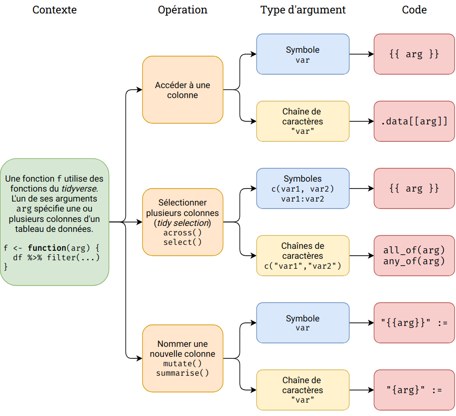

Partie 19 Programmer avec le tidyverse
Dans les parties précédentes, nous avons vu comment créer et utiliser nos propres fonctions. Cependant, un lectorat attentif aura remarqué que nous avons rigoureusement évité d’utiliser des fonctions du tidyverse, notamment de dplyr, de tidyr et de ggplot2, dans les fonctions que nous avons créées jusqu’ici.
Nous allons voir dans cette section les spécificités liées à certaines fonctions du tidyverse et les manières de les utiliser pour programmer et les inclure dans nos propres fonctions.
On commence avant toute chose par charger le tidyverse et le jeu de données starwars de dplyr.
Les notions et fonctions abordées dans cette partie sont propres aux extensions du tidyverse. Elles ne seront en général pas utilisables ailleurs dans R.
19.1 Spécificités du tidyverse
Les extensions du tidyverse fournissent une syntaxe lisible et agréable à utiliser lorsqu’on les utilise de manière interactive. Par exemple, si on veut filtrer les lignes et les colonnes d’un tableau de données en base R, on utilise quelque chose comme :
Tandis qu’avec dplyr on peut faire :
L’avantage de dplyr est double :
- dans
filter, on sait qu’on travaille à l’intérieur du tableau de données, on indique donc justespecieset passtarwars$species - dans
select, on peut indiquer les noms de colonnes en omettant les guillemets
Cette simplification pour une utilisation interactive, la plus fréquente, entraîne cependant une complexification lorsqu’on souhaite utiliser ces fonctions pour programmer, notamment quand on veut les utiliser à l’intérieur d’autres fonctions.
19.1.1 data masking
On part du tableau de données d’exemple suivant38.
restos <- tibble(
nom = c("Chez Jojo", "Vertige des sens", "Le Crousse", "Le bouchon coréen", "Le lampad'hair"),
style = c("tradi", "gastro", "tradi", "gastro", "coiffure"),
ville = c("Ecully", "Lyon", "Lyon", "Lyon", "Ecully"),
evaluation = c(4.6, 3.2, 3.3, 4.1, 1.2),
places = c(28, 32, 94, 18, 8),
note = c("Pas mal", "Cher", "Ambiance jeune", "Original", "Euh ?")
)
restos
#> # A tibble: 5 × 6
#> nom style ville evaluation places note
#> <chr> <chr> <chr> <dbl> <dbl> <chr>
#> 1 Chez Jojo tradi Ecully 4.6 28 Pas mal
#> 2 Vertige des sens gastro Lyon 3.2 32 Cher
#> 3 Le Crousse tradi Lyon 3.3 94 Ambiance jeune
#> 4 Le bouchon coréen gastro Lyon 4.1 18 Original
#> 5 Le lampad'hair coiffure Ecully 1.2 8 Euh ?Avec dplyr, on peut sélectionner une colonne du tableau avec :
restos %>% select(note)
#> # A tibble: 5 × 1
#> note
#> <chr>
#> 1 Pas mal
#> 2 Cher
#> 3 Ambiance jeune
#> 4 Original
#> 5 Euh ?Dans cette expression, note ne se réfère pas à un objet note de notre environnement, mais à une variable du tableau de données restos.
Que se passe-t-il si on passe à select non pas une colonne du tableau mais bien un objet de notre environnement ?
x <- "note"
restos %>% select(x)
#> # A tibble: 5 × 1
#> note
#> <chr>
#> 1 Pas mal
#> 2 Cher
#> 3 Ambiance jeune
#> 4 Original
#> 5 Euh ?Ça fonctionne aussi : en l’absence de colonne nommée x, select va aller chercher le x de notre environnement et utiliser sa valeur pour sélectionner la colonne par nom.
Mais que se passe-t-il s’il existe à la fois une colonne du tableau et un objet de notre environnement du même nom ?
note <- "nom"
restos %>% select(note)
#> # A tibble: 5 × 1
#> note
#> <chr>
#> 1 Pas mal
#> 2 Cher
#> 3 Ambiance jeune
#> 4 Original
#> 5 Euh ?Dans ce cas, c’est la colonne du tableau qui a la priorité. On dit que dplyr fait du data masking : les objets de notre environnement sont “masqués” par les colonnes du même nom de notre tableau de données. On retrouve ce data masking dans d’autres fonctions comme filter(), mutate() ou summarise(), mais aussi dans la sélection des variables avec aes() pour les fonctions de ggplot2.
Dans certains cas de figure, on peut vouloir outrepasser ce data masking. Par exemple, dans le cas suivant, la nouvelle colonne note_michelin n’est pas créée à partir des nouvelles données de l’objet note, mais à partir de celles de la colonne note.
note <- c(12, 14, 9, 15, NA)
restos %>% mutate(note_michelin = note)
#> # A tibble: 5 × 7
#> nom style ville evaluation places note note_michelin
#> <chr> <chr> <chr> <dbl> <dbl> <chr> <chr>
#> 1 Chez Jojo tradi Ecully 4.6 28 Pas mal Pas mal
#> 2 Vertige des sens gastro Lyon 3.2 32 Cher Cher
#> 3 Le Crousse tradi Lyon 3.3 94 Ambiance jeune Ambiance jeu…
#> 4 Le bouchon coréen gastro Lyon 4.1 18 Original Original
#> 5 Le lampad'hair coiffure Ecully 1.2 8 Euh ? Euh ?“Il suffit de changer le nom de l’objet note pour qu’il ne corresponde à aucune colonne !”, s’exclamera la lectrice ou le lecteur attentif.ve. Mais, outre que cela peut être source d’erreur, il est des cas où on ne connaît pas le nom des colonnes du tableau, par exemple quand l’opération se déroule dans une fonction et que le tableau est passé en paramètre :
Rien ne nous assure dans ce cas que le tableau df ne contient pas déjà une colonne nommée valeurs qui “masquerait” l’objet valeurs passé en argument…
Pour pallier à ce problème, à chaque fois qu’on est dans un environnement où du data masking se produit, on peut utiliser deux “pronoms” spécifiques nommés .data et .env :
.data$varou.data[["var"]]pointe vers l’objetvarcorrespondant à une colonne du tableau de données.env$varou.env[["var"]]pointe vers l’objetvarcorrespondant à un objet de notre environnement
Avec ces deux outils, on peut donc explicitement choisir d’où viennent les données qu’on utilise.
note <- c(12, 14, 9, 15, NA)
restos %>% mutate(note_michelin = .env$note)
#> # A tibble: 5 × 7
#> nom style ville evaluation places note note_michelin
#> <chr> <chr> <chr> <dbl> <dbl> <chr> <dbl>
#> 1 Chez Jojo tradi Ecully 4.6 28 Pas mal 12
#> 2 Vertige des sens gastro Lyon 3.2 32 Cher 14
#> 3 Le Crousse tradi Lyon 3.3 94 Ambiance jeune 9
#> 4 Le bouchon coréen gastro Lyon 4.1 18 Original 15
#> 5 Le lampad'hair coiffure Ecully 1.2 8 Euh ? NA
restos %>% mutate(note = str_to_upper(.data$note))
#> # A tibble: 5 × 6
#> nom style ville evaluation places note
#> <chr> <chr> <chr> <dbl> <dbl> <chr>
#> 1 Chez Jojo tradi Ecully 4.6 28 PAS MAL
#> 2 Vertige des sens gastro Lyon 3.2 32 CHER
#> 3 Le Crousse tradi Lyon 3.3 94 AMBIANCE JEUNE
#> 4 Le bouchon coréen gastro Lyon 4.1 18 ORIGINAL
#> 5 Le lampad'hair coiffure Ecully 1.2 8 EUH ?En utilisant .env, on peut donc s’assurer que notre fonction filtre_nom() ci-dessus va bien prendre les valeurs dans notre environnement, donc dans l’argument passé à la fonction, et pas dans une éventuelle colonne qui porterait le même nom.
filtre_nom <- function(df, valeurs) {
df %>% filter(nom %in% .env$valeurs)
}
filtre_nom(restos, c("Chez Jojo", "Le Crousse"))
#> # A tibble: 2 × 6
#> nom style ville evaluation places note
#> <chr> <chr> <chr> <dbl> <dbl> <chr>
#> 1 Chez Jojo tradi Ecully 4.6 28 Pas mal
#> 2 Le Crousse tradi Lyon 3.3 94 Ambiance jeune19.1.2 tidy selection
Une autre spécificité de certaines fonctions du tidyverse réside dans le mode de sélection des colonnes basé sur un “mini-langage” permettant des expressions comme :
Cette méthode de sélection de colonnes est appelée tidy selection et on la retrouve dans plusieurs fonctions de dplyr et tidyr, comme select(), across(), c_across(), pull(), pivot_longer(), etc.
La tidy selection est implémentée par le package tidyselect et on peut retrouver les différentes possibilités de ce mini-langage dans la vignette Selection language.
On notera que la tidy selection fait appel au data masking, tout en y ajoutant des fonctions spécifiques.
19.1.3 Utilisation dans des fonctions
Une difficulté liée au data masking survient quand les colonnes du tableau ne sont pas saisies directement mais proviennent d’un argument de fonction.
Soit la fonction suivante qui prend en entrée un tableau de données et une colonne et retourne le résultat d’un summmarise.
On voudrait pouvoir appeler cette fonction de la même manière qu’on utilise summarise, mais cela ne fonctionne pas :
summarise_min(restos, evaluation)
#> Error: Problem with `summarise()` column `min`.
#> ℹ `min = min(col)`.
#> ✖ objet 'evaluation' introuvableLe message d’erreur nous dit que l’objet evaluation est introuvable. La raison n’est pas triviale, elle repose sur plusieurs mécanismes assez complexes liés à l’évaluation des expressions dans R, mais on pourrait résumer en disant que les fonctions du tidyverse utilisent leur propre mécanisme d’évaluation qui tient compte notamment du data masking. Or, quand on utilise l’argument col dans le summarise de notre fonction, c’est l’évaluation “normale” de R qui est utilisée : le data masking n’étant pas pris en compte, l’objet evaluation est recherché dans notre environnement plutôt que dans notre tableau, ce qui génère une erreur puisqu’aucun objet de ce nom n’existe en-dehors du tableau.
Comme la tidy selection fait appel au data masking, elle génère le même type d’erreur :
select_col <- function(df, col) {
df %>% select(col)
}
select_col(restos, evaluation)
#> Error: objet 'evaluation' introuvableC’est pourquoi les packages du tidyverse fournissent un opérateur permettant de “forcer” l’évaluation d’expressions selon la manière qu’elles attendent. Cet opérateur prend la forme de double accolades {{ }} et se nomme curly curly.
Pour résoudre le problème de notre fonction summarise_min(), on peut donc simplement faire passer notre argument col dans l’opérateur curly curly :
summarise_min <- function(df, col) {
df %>% summarise(min = min({{ col }}))
}
summarise_min(restos, evaluation)
#> # A tibble: 1 × 1
#> min
#> <dbl>
#> 1 1.2À noter que curly curly permet de passer en argument toute expression qui serait acceptée directement par les fonctions appelées. On peut donc combiner plusieurs colonnes, effectuer des opérations, etc.
Et on peut même utiliser les pronoms .data et .env :
19.2 Programmer avec dplyr et tidyr
19.2.1 Utiliser une colonne passée en argument
Une opération courante quand on utilise les fonctions de dplyr ou tidyr dans une fonction est de prendre en argument une colonne à laquelle on souhaite accéder. Dans ce cas on doit utiliser l’opérateur curly curly et entourer les utilisations de l’argument contenant la colonne par une paire d’accolades.
On a déjà vu un exemple précédemment avec summarise().
resume <- function(df, col) {
df %>% summarise(
moyenne = mean({{ col }}),
min = min({{ col }}),
max = max({{ col }})
)
}
resume(restos, evaluation)
#> # A tibble: 1 × 3
#> moyenne min max
#> <dbl> <dbl> <dbl>
#> 1 3.28 1.2 4.6C’est le cas dans toutes les fonctions qui font du data masking, comme group_by() :
resume_groupe <- function(df, col_group, col_var) {
df %>%
group_by({{ col_group }}) %>%
summarise(
moyenne = mean({{col_var}}),
min = min({{ col_var }}),
max = max({{ col_var }})
)
}
resume_groupe(restos, style, evaluation)
#> # A tibble: 3 × 4
#> style moyenne min max
#> <chr> <dbl> <dbl> <dbl>
#> 1 coiffure 1.2 1.2 1.2
#> 2 gastro 3.65 3.2 4.1
#> 3 tradi 3.95 3.3 4.619.2.2 Utiliser une sélection de colonnes passée en argument
Dans la section précédente, on a utilisé à chaque fois une seule colonne. Si on souhaite grouper ou appliquer une fonction sur une série de colonnes, il faut alors utiliser across().
resume_groupe <- function(df, cols_group, cols_var) {
df %>%
group_by(
across({{ cols_group }})
) %>%
summarise(
across(
{{ cols_var }},
mean
)
)
}On peut du coup utiliser tous les modes de sélection de colonnes permises par la tidy selection.
resume_groupe(restos, c(style, ville), where(is.numeric))
#> `summarise()` has grouped output by 'style'. You can override using the `.groups` argument.
#> # A tibble: 4 × 4
#> # Groups: style [3]
#> style ville evaluation places
#> <chr> <chr> <dbl> <dbl>
#> 1 coiffure Ecully 1.2 8
#> 2 gastro Lyon 3.65 25
#> 3 tradi Ecully 4.6 28
#> 4 tradi Lyon 3.3 94De la même manière, si on utilise un argument de fonction pour sélectionner des variables avec select(), on doit l’entourer avec l’opérateur curly curly, et on peut dès lors utiliser toutes les possibilités de la tidy selection.
19.2.3 Nommer de nouvelles colonnes à partir d’un argument
On a vu comment utiliser des colonnes passées en argument pour accéder à leur contenu. On peut aussi vouloir passer en argument des noms de colonnes qu’on souhaite créer, par exemple avec un mutate() ou un summarise().
On pourrait essayer directement de la manière suivante, mais cela ne fonctionne pas car dans ce cas la colonne créée s’appelle “col_new”, et pas la valeur de l’argument col_new.
calcule_pourcentage <- function(df, col_new, col_var) {
df %>%
mutate(
col_new = {{ col_var }} / sum({{ col_var }}) * 100
)
}
calcule_pourcentage(restos, prop_places, places)
#> # A tibble: 5 × 7
#> nom style ville evaluation places note col_new
#> <chr> <chr> <chr> <dbl> <dbl> <chr> <dbl>
#> 1 Chez Jojo tradi Ecully 4.6 28 Pas mal 15.6
#> 2 Vertige des sens gastro Lyon 3.2 32 Cher 17.8
#> 3 Le Crousse tradi Lyon 3.3 94 Ambiance jeune 52.2
#> 4 Le bouchon coréen gastro Lyon 4.1 18 Original 10
#> 5 Le lampad'hair coiffure Ecully 1.2 8 Euh ? 4.44Dans ce cas de figure, la syntaxe à utiliser est un peu plus complexe :
- on remplace l’opérateur
=dumutate()par l’opérateur:=(appelé walrus operator) - on place à gauche du
:=une chaîne de caractères dans laquelle notre argument contenant le nom de la nouvelle variable est entouré d’une paire d’accolades.
Voici ce que ça donne pour l’exemple ci-dessus :
calcule_pourcentage <- function(df, col_new, col_var) {
df %>%
mutate(
"{{col_new}}" := {{ col_var }} / sum({{ col_var }}) * 100
)
}
calcule_pourcentage(restos, prop_places, places)
#> # A tibble: 5 × 7
#> nom style ville evaluation places note prop_places
#> <chr> <chr> <chr> <dbl> <dbl> <chr> <dbl>
#> 1 Chez Jojo tradi Ecully 4.6 28 Pas mal 15.6
#> 2 Vertige des sens gastro Lyon 3.2 32 Cher 17.8
#> 3 Le Crousse tradi Lyon 3.3 94 Ambiance jeune 52.2
#> 4 Le bouchon coréen gastro Lyon 4.1 18 Original 10
#> 5 Le lampad'hair coiffure Ecully 1.2 8 Euh ? 4.44Cette syntaxe est un peu complexe de prime abord, mais elle à l’avantage d’être souple : en particulier, on peut placer le texte que l’on souhaite dans la chaîne de caractères en plus des noms de variables entre double accolades.
Cela permet par exemple de générer le nom d’une nouvelle variable automatiquement à partir de l’ancienne.
calcule_pourcentage <- function(df, col_var) {
df %>%
mutate(
"prop_{{col_var}}" := {{ col_var }} / sum({{ col_var }}) * 100
)
}
calcule_pourcentage(restos, places)
#> # A tibble: 5 × 7
#> nom style ville evaluation places note prop_places
#> <chr> <chr> <chr> <dbl> <dbl> <chr> <dbl>
#> 1 Chez Jojo tradi Ecully 4.6 28 Pas mal 15.6
#> 2 Vertige des sens gastro Lyon 3.2 32 Cher 17.8
#> 3 Le Crousse tradi Lyon 3.3 94 Ambiance jeune 52.2
#> 4 Le bouchon coréen gastro Lyon 4.1 18 Original 10
#> 5 Le lampad'hair coiffure Ecully 1.2 8 Euh ? 4.44Ou de personnaliser les noms de colonnes dans un summarise().
19.2.4 Désambiguïser data et env
Lorsqu’on utilise des fonctions de dplyr ou tidyr dans d’autres fonctions, il peut être utile de préciser, quand on accède à un objet dont on connaît le nom (c’est-à-dire dont le nom n’est pas passé en argument), si c’est un objet de type “data” (une colonne du tableau de données dans lequel on travaille) ou de type “env” (un objet de l’environnement dans lequel on travaille).
Dans la fonction suivante, on calcule la moyenne d’une colonne numérique de restos selon les valeurs de la colonne ville, et on ne conserve que les villes pour lesquelles cette moyenne est supérieure à un certain seuil.
stat_par_ville <- function(col_var, seuil = NULL) {
res <- restos %>%
group_by(.data$ville) %>%
summarise(moyenne = mean({{col_var}})) %>%
filter(moyenne > .env$seuil)
}
stat_par_ville(evaluation, seuil = 0)
stat_par_ville(evaluation, seuil = 3)On veut que l’objet ville du group_by soit toujours la colonne du tableau restos nommée ville, on peut donc s’assurer que c’est bien le cas en l’explicitant avec .data$ville. À l’inverse, on veut que la valeur seuil du filter soit celle de l’argument du même nom, donc d’un objet de l’environnement. On peut s’en assurer en indiquant .env$seuil.
Cette explicitation ne paraît pas forcément utile à première vue, mais elle peut éviter des problèmes à terme, notamment si on ajoute de nouvelles colonnes à un tableau de données et qu’on finit par avoir des objets “data” et des objets “env” avec le même nom.
19.2.5 Quand les arguments sont des chaînes de caractères
Jusqu’ici, on a passé les arguments de fonction sous la forme d’expressions ou de symboles.
Mais il arrive que des noms de colonnes soient passés plutôt sous forme de chaînes de caractères.
On ne peut pas dans ce cas utiliser l’opérateur curly curly, par contre on peut utiliser le pronom .data pour accéder aux colonnes à partir de leur nom.
summarise_min <- function(df, col) {
df %>% summarise(min = min(.data[[col]]))
}
summarise_min(restos, "evaluation")
#> # A tibble: 1 × 1
#> min
#> <dbl>
#> 1 1.2Si dans l’exemple précédent on souhaite personnaliser le nom de la colonne créée en utilisant la valeur de notre paramètre evaluation, on place le nom de notre objet dans une chaîne de caractère en l’entourant d’accolades simples, et on utilise le walrus operator :=.
summarise_min <- function(df, col) {
df %>% summarise("min_{col}" := min(.data[[col]]))
}
summarise_min(restos, "evaluation")
#> # A tibble: 1 × 1
#> min_evaluation
#> <dbl>
#> 1 1.2Quand on veut plutôt sélectionner des colonnes avec select() ou across() et qu’on récupère les noms de ces colonnes dans un vecteur de chaînes de caractères, on doit utiliser les fonctions all_of() ou any_of().
evaluation_par_groupe <- function(cols_group) {
restos %>%
group_by(
across(all_of(cols_group))
) %>%
summarise(evaluation = mean(.data$evaluation))
}
evaluation_par_groupe("ville")
#> # A tibble: 2 × 2
#> ville evaluation
#> <chr> <dbl>
#> 1 Ecully 2.9
#> 2 Lyon 3.53
evaluation_par_groupe(c("ville", "style"))
#> `summarise()` has grouped output by 'ville'. You can override using the `.groups` argument.
#> # A tibble: 4 × 3
#> # Groups: ville [2]
#> ville style evaluation
#> <chr> <chr> <dbl>
#> 1 Ecully coiffure 1.2
#> 2 Ecully tradi 4.6
#> 3 Lyon gastro 3.65
#> 4 Lyon tradi 3.3La différence entre all_of() et any_of() est que all_of() produira une erreur si l’une des variables n’est pas trouvée.
select_all_cols <- function(cols) {
restos %>% select(all_of(cols))
}
select_all_cols(c("ville", "evaluation", "igloo"))
#> Error: Can't subset columns that don't exist.
#> ✖ Column `igloo` doesn't exist.Tandis qu’any_off() renverra uniquement les colonnes existantes, sans générer d’erreur.
19.3 Programmer avec ggplot2
19.3.1 Sélection de colonnes avec aes()
Les règles pour sélectionner des colonnes dans un graphique ggplot2 à partir d’arguments passés à une fonction sont les mêmes que celles vues précédemment pour dplyr et tidyr :
- si les noms sont passés sous forme de symboles ou d’expressions, on utilise l’opérateur curly curly (
{{ }})
bar_graph <- function(df, col) {
ggplot(df) +
geom_bar(aes(x = {{ col }}), fill = "skyblue")
}
bar_graph(restos, ville)
- si les noms sont passés sous forme de chaînes de caractères, on utilise le pronom
.data
bar_graph <- function(df, col) {
ggplot(df) +
geom_bar(aes(x = .data[[col]]), fill = "skyblue")
}
bar_graph(restos, "ville")
19.3.2 Faceting
Quand on utilise facet_wrap() ou facet_grid(), si la variable de faceting est donnée sous forme d’un symbole, on utilise vars() en conjonction avec l’opérateur curly curly.
facet_points <- function(facet) {
ggplot(restos) +
geom_point(aes(x = .data$evaluation, y = .data$places)) +
facet_wrap(vars({{ facet }}))
}
facet_points(ville)
Si la variable de faceting est donnée sous forme d’une chaîne de caractères , on utilise vars() en conjonction avec le pronom .data.
facet_points <- function(facet) {
ggplot(restos) +
geom_point(aes(x = .data$evaluation, y = .data$places)) +
facet_wrap(vars(.data[[facet]]))
}
facet_points("ville")
Si on utilise facet_grid(), la fonction doit accepter deux variables de faceting comme arguments. Celles-ci peuvent ensuite être passées à facet_grid() via ses paramètres rows et cols.
facet_points <- function(facet_row, facet_col) {
ggplot(restos) +
geom_point(aes(x = .data$evaluation, y = .data$places)) +
facet_grid(
rows = vars({{ facet_row }}),
cols = vars({{ facet_col }})
)
}
facet_points(ville, style)
19.4 Aide-mémoire
On essaie de récapituler ici les points importants pour pouvoir les retrouver facilement.
Premier point important : les spécificités vues ici ne s’appliquent que quand on veut utiliser certaines fonctions du tidyverse (dplyr, tidyr, ggplot2) à l’intérieur d’autres fonctions. Plus spécifiquement, elles sont à prendre en compte quand on souhaite passer en argument d’une fonction des noms de colonnes qui seront utilisées par des fonctions du tidyverse.
Elles ne s’appliquent pas si on passe en arguments d’autres paramètres comme le tableau de données qu’on souhaite utiliser, des valeurs numériques ou des chaînes de caractères qu’on souhaite récupérer telles quelles, etc.
Dans le cas où deux objets du même nom pourraient exister à la fois comme colonne de notre tableau de données (objet data) et comme objet de notre environnement (objet env), on peut expliciter lequel on souhaite utiliser avec les pronoms
.data$varet.env$varSi un argument est une colonne passée sous la forme d’un symbole (
var), on doit l’encadrer de l’opérateur curly curly.
summarise_col <- function(df, col) {
df %>% summarise(moyenne = mean({{ col }}, na.rm = TRUE))
}
summarise_col(starwars, height)- Si un argument est un nom de colonne passé sous la forme d’une chaîne de caractères (
"var"), on y accède avec le pronom.data:
summarise_col <- function(df, col_name) {
df %>% summarise(moyenne = mean(.data[[col_name]], na.rm = TRUE))
}
summarise_col(starwars, "height")- Si on utilise la tidy selection dans un
select(), unacross()ou une autre fonction, on l’encadre de l’opérateur curly curly :
select_cols <- function(df, cols) {
df %>% select({{ cols }})
}
select_cols(starwars, !where(is.list))- Si on indique les noms de plusieurs colonnes sous la forme d’un vecteur de chaînes de caractères pour utilisation dans un
select(), unacross()ou une autre fonction acceptant la tidy selection, on utiliseall_of()ouany_of():
select_cols <- function(df, col_names) {
df %>% select(all_of(col_names))
}
select_cols(starwars, c("height", "mass"))- Si on souhaite créer une nouvelle colonne à partir de la valeur d’un argument, on l’utilise sous la forme d’une chaîne de caractères avec l’opérateur walrus
:=. Si l’argument est un symbole on l’entoure avec{{ }}, si c’est une chaîne de caractères on l’entoure avec{}:
add_mean_by_species <- function(col_var) {
starwars %>%
group_by(species) %>%
mutate("moyenne_{{col_var}}" := mean({{ col_var}}))
}
add_mean_by_species(height)Le schéma suivant récapitule les points précédents :

19.5 Ressources
Pour plus de détails sur la programmation avec les fonctions de dplyr, on pourra se reporter à la vignette Programming with dplyr.
Pour l’utilisation de ggplot2 dans des fonctions, on trouvera plus de détails dans la vignette Using ggplot2 in packages.
Les mécanismes d’évaluation et de métaprogrammation propres aux packages du tidyverse sont implémentés en grande partie dans le package rlang.
Enfin, pour une présentation approfondie des possibilités de métaprogrammation dans R en général, on pourra consulter le chapitre Metaprogramming de l’ouvrage en ligne Advanced R.
19.6 Exercices
19.6.1 dplyr et tidyr
Exercice 1.1
Créer une fonction my_table qui prend en arguments un tableau de données df et une variable var et qui renvoie le résultat de count() sur cette variable.
Vérifier avec :
my_table(starwars, gender)
#> # A tibble: 3 × 2
#> gender n
#> <chr> <int>
#> 1 feminine 17
#> 2 masculine 66
#> 3 <NA> 4Modifier my_table pour qu’elle accepte trois arguments df, var1 et var2, et qu’elle retourne le résultat du count appliqué à var1 et à var2.
my_table(starwars, gender, sex)
#> # A tibble: 6 × 3
#> gender sex n
#> <chr> <chr> <int>
#> 1 feminine female 16
#> 2 feminine none 1
#> 3 masculine hermaphroditic 1
#> 4 masculine male 60
#> 5 masculine none 5
#> 6 <NA> <NA> 4Modifier my_table pour qu’elle accepte deux arguments df et vars, et qu’elle applique le count à toutes les variables indiquées dans vars en utilisant la tidy selection.
my_table(starwars, c(gender, sex))
#> # A tibble: 6 × 3
#> gender sex n
#> <chr> <chr> <int>
#> 1 feminine female 16
#> 2 feminine none 1
#> 3 masculine hermaphroditic 1
#> 4 masculine male 60
#> 5 masculine none 5
#> 6 <NA> <NA> 4Exercice 1.2
Le code suivant ajoute une nouvelle colonne diff_height au tableau starwars, qui contient la différence entre la valeur de height et sa moyenne selon les valeurs de species.
En utilisant ce code, créer une fonction diff_mean_height qui accepte un seul argument by et qui ajoute à starwars une colonne diff_height calculée de la même manière, mais en appliquant le group_by au by passé en paramètre.
Modifier la fonction précédente en une nouvelle fonction diff_mean, qui prend deux arguments by et var, et qui applique la même transformation non pas à height mais à la variable passée dans var.
Modifier la fonction pour que le nom de la colonne ajoutée ne soit pas diff_mean mais le nom de la variable passée dans var suivi du suffixe "_diff_mean".
Modifier à nouveau diff_mean pour pouvoir passer à by plusieurs variables en utilisant la tidy selection.
Exercice 1.3
La fonction unnest() de tidyr permet de transformer une colonne contenant des valeurs de type liste en colonne “normale” en dupliquant les lignes autant de fois qu’il y a d’éléments dans chaque liste :
starwars %>%
unnest(films) %>%
select(name, films)
#> # A tibble: 173 × 2
#> name films
#> <chr> <chr>
#> 1 Luke Skywalker The Empire Strikes Back
#> 2 Luke Skywalker Revenge of the Sith
#> 3 Luke Skywalker Return of the Jedi
#> 4 Luke Skywalker A New Hope
#> 5 Luke Skywalker The Force Awakens
#> 6 C-3PO The Empire Strikes Back
#> 7 C-3PO Attack of the Clones
#> 8 C-3PO The Phantom Menace
#> 9 C-3PO Revenge of the Sith
#> 10 C-3PO Return of the Jedi
#> # … with 163 more rowsCréer une fonction freq_liste() qui prend en entrée un argument var et retourne grâce à count le tri à plat de toutes les valeurs de la variable correspondant à var dans starwars, même si cette variable contient des listes.
19.6.2 Noms de colonnes en chaînes de caractères
Exercice 2.1
La fonction readline() permet de lire une chaîne de caractères entrée au clavier par l’utilisateur :
Créer une fonction affiche_planete qui affiche le message “Nom de la planète”, lit la réponse de l’utilisateur, et affiche à l’aide d’un filter() les lignes du tableau starwars pour lesquelles la variable homeworld correspond au nom saisi.
Créer une fonction affiche_barplot qui affiche le message “Nom de la variable”, lit la réponse de l’utilisateur, et affiche le diagramme en barres de la variable correspondante du tableau starwars.
Créer une fonction affiche_colonnes qui affiche le message “Noms des variables séparés par des virgules”, lit la réponse de l’utilisateur, et affiche uniquement les colonnes saisies du tableau starwars.
Conseil : pour récupérer un vecteur de colonnes à partir de la saisie de l’utilisateur, on pourra utiliser les fonctions str_split() et str_trim() de stringr.
19.6.3 Ambiguïté data / env
Exercice 3.1
Créer une fonction filter_height() qui accepte un argument nommé height, et qui retourne les lignes de starwars pour lesquelles les valeurs de la variable height sont supérieures à celles de l’argument height. Créer cette fonction sans utiliser dplyr mais avec l’opérateur [,].
filter_height(200)
#> # A tibble: 16 × 14
#> name height mass hair_color skin_color eye_color birth_year sex gender
#> <chr> <int> <dbl> <chr> <chr> <chr> <dbl> <chr> <chr>
#> 1 Darth … 202 136 none white yellow 41.9 male mascu…
#> 2 Chewba… 228 112 brown unknown blue 200 male mascu…
#> 3 <NA> NA NA <NA> <NA> <NA> NA <NA> <NA>
#> 4 Roos T… 224 82 none grey orange NA male mascu…
#> 5 Rugor … 206 NA none green orange NA male mascu…
#> 6 Yarael… 264 NA none white yellow NA male mascu…
#> 7 Lama Su 229 88 none grey black NA male mascu…
#> 8 Taun We 213 NA none grey black NA fema… femin…
#> 9 Grievo… 216 159 none brown, whi… green, y… NA male mascu…
#> 10 Tarfful 234 136 brown brown blue NA male mascu…
#> 11 Tion M… 206 80 none grey black NA male mascu…
#> 12 <NA> NA NA <NA> <NA> <NA> NA <NA> <NA>
#> 13 <NA> NA NA <NA> <NA> <NA> NA <NA> <NA>
#> 14 <NA> NA NA <NA> <NA> <NA> NA <NA> <NA>
#> 15 <NA> NA NA <NA> <NA> <NA> NA <NA> <NA>
#> 16 <NA> NA NA <NA> <NA> <NA> NA <NA> <NA>
#> # … with 5 more variables: homeworld <chr>, species <chr>, films <list>,
#> # vehicles <list>, starships <list>Améliorer la fonction pour qu’elle ne retourne pas les lignes pour lesquelles la variable correspondant à height_var vaut NA.
filter_height(200)
#> # A tibble: 10 × 14
#> name height mass hair_color skin_color eye_color birth_year sex gender
#> <chr> <int> <dbl> <chr> <chr> <chr> <dbl> <chr> <chr>
#> 1 Darth … 202 136 none white yellow 41.9 male mascu…
#> 2 Chewba… 228 112 brown unknown blue 200 male mascu…
#> 3 Roos T… 224 82 none grey orange NA male mascu…
#> 4 Rugor … 206 NA none green orange NA male mascu…
#> 5 Yarael… 264 NA none white yellow NA male mascu…
#> 6 Lama Su 229 88 none grey black NA male mascu…
#> 7 Taun We 213 NA none grey black NA fema… femin…
#> 8 Grievo… 216 159 none brown, whi… green, y… NA male mascu…
#> 9 Tarfful 234 136 brown brown blue NA male mascu…
#> 10 Tion M… 206 80 none grey black NA male mascu…
#> # … with 5 more variables: homeworld <chr>, species <chr>, films <list>,
#> # vehicles <list>, starships <list>Écrire la même fonction, cette fois en utilisant filter() à la place de [,].
Quels sont les avantages et inconvénients des deux méthodes ?
La fonction utilisant filter() est plus compacte et plus lisible, et elle gère les NA de la manière attendue sans condition supplémentaire.
La fonction utilisant [,] évite l’ambiguïté liée à la présence simultanée d’un argument height et d’une colonne height.
19.6.4 ggplot2
Exercice 4.1
Créer une fonction graph_bar qui prend en argument un tableau de données df et une variable var et qui retourne le diagramme en barre de la variable correspondante.

Modifier la fonction graph_bar pour qu’elle accepte un troisième argument nommé facet_var et qu’elle retourne le diagramme en barre de var pour chaque valeur de facet_var.

Exercice 4.2
Créer une fonction graph_points qui prend en arguments un tableau de données et deux variables, et affiche le nuage de points de ces deux variables.
graph_points(starwars, height, mass)
#> Warning: Removed 28 rows containing missing values (geom_point).
Ajouter un quatrième argument color à la fonction graph_points(), qui permet de spécifier la couleur des points (la même couleur pour tous).
graph_points(starwars, height, mass, color = "red")
#> Warning: Removed 28 rows containing missing values (geom_point).
Modifier graph_points() pour que l’argument color corresponde non pas à une couleur fixe mais à une variable dont les valeurs déterminent la couleur des points.
graph_points(starwars, height, mass, color = sex)
#> Warning: Removed 28 rows containing missing values (geom_point).
Facultatif : modifier graph_points() pour que l’argument color puisse accepter aussi bien une variable qu’une couleur fixe.
Indication : en s’aidant du résultat de la fonction suivante, on pourra tester si la valeur passée à color est bien une colonne du tableau de données.
graph_points <- function(df, var_x, var_y, color) {
color_value <- deparse(substitute(color))
g <- ggplot(df)
if (color_value %in% names(df)) {
g <- g +
geom_point(aes(x = {{var_x}}, y = {{var_y}}, color = {{color}}))
} else {
g <- g +
geom_point(aes(x = {{var_x}}, y = {{var_y}}), color = color)
}
g
}Effectivement, un salon de coiffure s’est à nouveau glissé dans ce jeu de données.↩